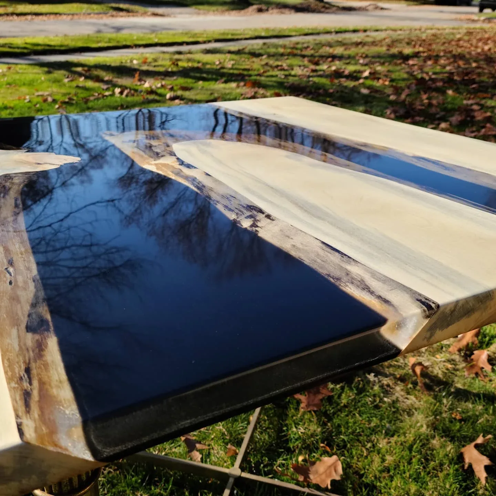

Piece / projectCottonwood, a dark river, and crystal clarity
Natural cottonwood edges frame a dark resin river with exceptional visual clarity and a reflective finished surface.
Furniture & tables • Commission
A custom cherry music stand, a carved bagpipe motif, and a good reason to learn CNC.
Create a functional music stand with a bagpipe incorporated into its form.
Develop the concept, learn the CNC workflow, collaborate on the artwork, and fabricate the stand.
A custom cherry stand documented from parts and assembly to the finished object.
Concept development, CNC learning and fabrication.
A custom music stand documented through original object and process photographs.
Create a functional music stand with a bagpipe incorporated into its form. The customer left room for a personal interpretation rather than specifying an existing design.
The stand had to remain useful as a music stand while carrying a specific visual identity. The bagpipe motif was not an unrelated engraving added at the end; it shaped the design and the manufacturing approach.
I developed a rough concept and acquired a BobsCNC to make the carved design I had in mind. Learning the software became part of delivering the object, not a separate exercise.
I brought in @svyart.3d_artist to refine the digital artwork. That collaboration helped carry the concept into a form I could fabricate.
The project is a useful example of acquiring a capability for a real deliverable. CNC equipment alone was not the answer: I also had to connect the digital artwork to the physical rest, pedestal, and base.
The stand combines a carved music rest with a wooden pedestal and foot assembly. Figured cherry, the bagpipe motif and the rope-like border give the piece its visual character.
The process photographs show parts, clamping and assembly, alongside the completed object. The project account records an oil-and-wax finish.
The finished object combines a customer-specific theme, an unusual material treatment, digital-art collaboration, and hands-on fabrication. The process views belong alongside the completed stand because they explain how the parts became one functional object.
The artistic refinement and the fabrication are credited separately. Keeping those roles visible makes the collaboration clearer, and gives a future customer a more accurate picture of how a similarly individual brief could be developed.
Digital-art refinement: @svyart.3d_artist. Concept development and fabrication: Michael Pytlowany.
The project is documented by the original creator account and photographs. Customer acceptance and long-term service outcomes were not independently assessed.
Music-stand project account
24 December 2020
FROM THE TOOL CRIB